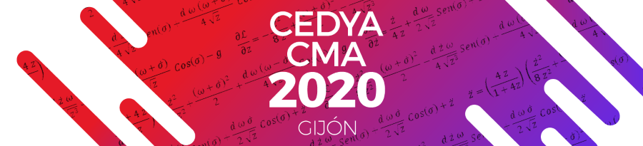
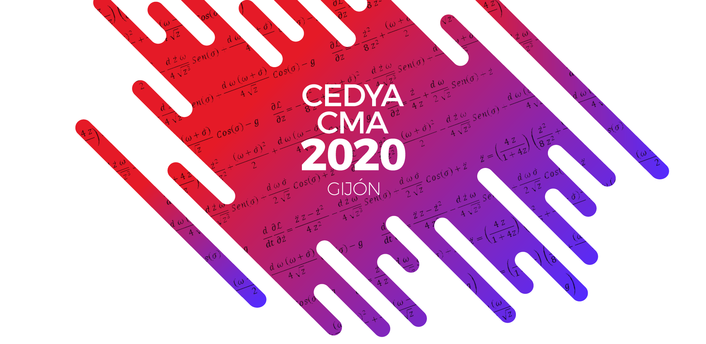
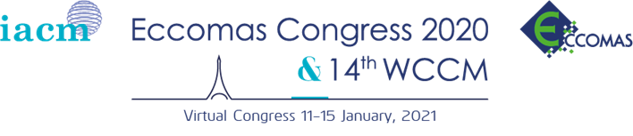
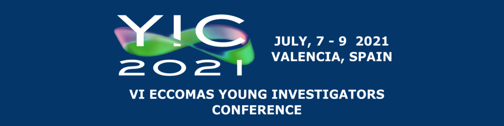
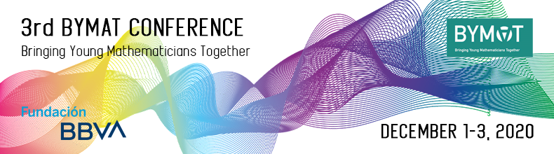

Anuncios
Comité Organizador Local
Departamento de Matemáticas
Universidad de Oviedo

El Comité Organizador Local y el Consejo Ejecutivo de la SEMA han acordado que el próximo CEDYA/CMA, que se celebrará en Gijón, tendrá lugar la semana del 14 al 18 de junio de 2021.
Formato: El congreso mantendrá su estructura original (presencial), estando siempre pendiente de las recomendaciones que puedan establecer las autoridades sanitarias, llevando, si fuera necesario, el congreso a una estructura semipresencial.
Contribuciones: Se mantendrán las propuestas ya aceptadas de mini simposios, contribuciones individuales y pósteres. Aquellos participantes que quieran retirar o modificar su propuesta, lo podrán hacer en las siguientes fechas:
En las mismas fechas se admitirán nuevas propuestas.
Nuevas inscripciones. Aquellas personas que no se hayan inscrito todavía o que hayan tenido que anular su inscripción, podrán inscribirse desde el martes 3 de noviembre de 2020 hasta el domingo 30 de mayo de 2021.
Programa científico. Debido a las probables modificaciones, el horario detallado tendrá que ser completamente actualizado, por lo que los horarios anunciados pierden toda validez.
Actas. En febrero de 2021 reabriremos el envío de actas. Aquellas personas que ya hayan enviado su resumen extendido, pueden mantener tu propuesta, o bien modificarla o retirarla.

Carlos Manuel Castro Barbero
Universidad Politécnica de Madrid
El próximo año 2021 celebraremos la XIX edición de la Escuela Hispano Francesa que estamos organizando desde la Universidad Politécnica de Madrid.
Como sabéis, este es uno de los eventos tradicionales de la Sociedad que se organiza en colaboración con la Société de Mathématiques Appliquées et Industrielles (SMAI). Está dirigido principalmente a jóvenes investigadores en el ámbito de la Matemática Aplicada, pero siempre está abierta a todos los que queráis participar y aprender sobre alguno de los temas de investigación que se tratan.
Como es habitual, la Escuela contará con cuatro minicursos y tres conferencias complementarias que tratarán líneas de investigación actuales. Especialmente los cursos tendrán un carácter introductorio en el que se presentarán aplicaciones de interés, técnicas matemáticas modernas y problemas abiertos en el área. La elección de los conferenciantes recae en el Comité Científico formado en esta ocasión por Claire Chainais (Université Lille 1), Raphaèle Herbin (Université d’Aix-Marseille), Antonio Sánchez (Universidad de California San Diego) y Jesús María Sanz Serna (Universidad Carlos III).
No hemos querido dejar pasar la oportunidad de rendir homenaje a uno de los miembros más queridos y respetados de la Sociedad, Amable Liñán, que como sabéis ha desarrollado su carrera en nuestra Universidad. En particular, la temática de la Escuela tendrá una fuerte orientación en las líneas de investigación que ha seguido Amable y le han llevado a crear y mantener una fructífera escuela y un gran reconocimiento internacional. En colaboración con SEMA, dedicaremos también un espacio específico para el homenaje del que os mantendremos informados.
La Escuela se celebrará del 30 de agosto al 3 de septiembre de 2021, justo antes del comienzo del curso académico. Hemos reservado la Residencia Lucas Olazábal que la Universidad Politécnica de Madrid gestiona en la cercana localidad de Cercedilla. Se trata de un bello enclave natural ubicado en el Parque Nacional de la Sierra de Guadarrama que nos parece ideal para este encuentro.
Confiamos que la situación sanitaria generada por el COVID permita la celebración presencial, teniendo en cuenta todas las medidas que garanticen un evento seguro.
La inscripción se abrirá en la primavera del próximo año, pero os iremos informando de las novedades en las próximas semanas. Estaremos encantados de recibiros en Madrid el año próximo.
Comité Organizador: Carlos Castro, Miguel Hermanns, Fabricio Macià, María Luisa Rapún y Laura Saavedra.
Harald van Brummelen
Eindhoven University of Technology
ECCOMAS 4
Secretary General
The COVID crisis has had a significant impact on all of us, and it has also disrupted many of the ECCOMAS processes. The ECCOMAS leadership is working hard to retain matters as close to normal as possible.
I would like to draw your attention to the ECCOMAS July 2020 Newsletter which has just been published.
The Newsletter is available via: https://www.eccomas.org/wp-content/uploads/sites/15/2020/07/Eccomas_Newsletter_July_2020_online.pdf.
Under normal circumstances, we would have proudly offered you a hardcopy of this newsletter as part of the conference material for the WCCM-ECCOMAS congress in Paris. However, due to the cancellation of the WCCM-ECCOMAS congress in July, we unfortunately do not have the option to present you with a hardcopy. We therefore believe it is better to refer you to the available pdf, so that you have direct access to the newsletter.
I would like to take the opportunity to thank all our colleagues who have contributed to the newsletter, in particular the guest editors Robin Bouclier and Raphaël Loubère.
Francisco Chinesta, Rémi Abgrall, Olivier Allix,
Michael Kaliske, David Néron
Congress Chairmen & Co-Organizers
https://www.wccm-eccomas2020.org

WCCM-ECCOMAS Congress will take place in digital version from January 11 to 15, 2021 and all those who already have an accepted paper will be able to propose a recording of their talk via a platform provided and to participate in virtual moments of exchange.
We are convinced that this new format, even with some drawbacks, has many advantages, in particular for young scientists but also for the others. For instance, it will become possible to follow all the presentations, browsing easily all the MS, surfing by keywords from one room to another and selecting only the talks that you want. The different talks will be available over a longer period than the classical one-week format. We paid special attention to maintain interaction between the participants to that purpose, direct exchanges with other participants, either by voice or by chat will be possible.
If you are interested in joining the conference, you can submit an abstract before October 25, 2020
Important deadlines are available on the conference website.
We hope you will embrace our proposal as a mean to create an enthusiastic and successful scientific event for our community.
We look forward to this new experience and thank you for your understanding and support.

The 6th ECCOMAS Young Investigators Conference, YIC2021, will take place from July 7th through 9th, 2021 at Universitat Politècnica de València, Spain. The main objective is to bring together in a relaxed environment young students, researchers and professors from all areas related with computational science and engineering, as in the previous YIC conferences series organized under the auspices of the European Community on Computational Methods in Applied Sciences (ECCOMAS). Participation of senior scientists sharing their knowledge and experience is thus critical for this event.
YIC 2021 is organized at Universitat Politècnica de València by the Sociedad Española de Métodos Numéricos en Ingeniería (SEMNI) and the Sociedad Española de Matemática Aplicada (SEMA). It is promoted by the ECCOMAS.
The main goal of the YIC 2021 conference is to provide a forum for presenting and discussing the current state-of-the-art achievements on Computational Methods and Applied Sciences, including theoretical models, numerical methods, algorithmic strategies and challenging engineering applications.
YIC is the conference that launched the ECCOMAS focused in Young researchers of thematic conferences. It is a medium-size conference (an average of 130-170 delegates) which allows for dynamic and fruitful exchanges between the participants.
ECCOMAS PhD. Olympiad will take place during the Conference.
Comité Organizador del 3rd BYMAT Conference
https://bymat.webs.upv.es/index/

Se anuncia la celebración del 3rd BYMAT Conference – Bringing Young Mathematicians Together. La conferencia se llevará a cabo online del 1 al 3 de diciembre de 2020. La participación y asistencia serán gratuitas.
El congreso está especialmente dirigido a estudiantes de doctorado en todas las áreas de matemáticas y disciplinas relacionadas, a quienes animamos a presentar propuestas para charlas cortas. Además, animamos a toda la comunidad matemática, desde estudiantes de grado y máster a profesores o profesionales de la industria a participar activamente en este encuentro.
Esperamos que las charlas y pósteres provengan principalmente de estudiantes de doctorado, jóvenes profesionales de la industria, estudiantes de máster e investigadores posdoctorales. El idioma oficial del congreso es el inglés.
El congreso se organizará en sesiones temáticas paralelas con las charlas breves (15-20 minutos) propuestas, una sesión de pósteres, 5 charlas plenarias impartidas por jóvenes profesores y profesionales de la industria y 3 workshops. Además, contaremos con una sesión especial con una mesa redonda sobre el papel de las matemáticas en la crisis del coronavirus organizada por la Fundación BBVA.
Fecha límite para las propuestas de charlas y pósteres: 4 de octubre.
Además, la revista Mathematics dará premios a los tres mejores pósteres.
Más información en la web: https://bymat.webs.upv.es/index/
Información de contacto: bymat@icmat.es.
Síguenos en redes sociales:
4.European Community in Computational Methods in Applied Sciences